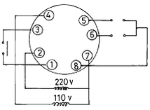
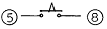
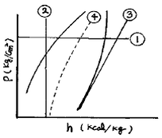
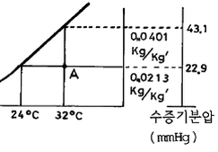

공조냉동기계기능사 (2004-07-18 기출문제)
1과목: 공조냉동안전관리
1. 줄 작업 할 때의 안전수칙에 어긋나는 것은?
- 줄을 해머대신 사용해서는 안 된다.
- 넓은 면은 톱작업 하기 전에 삼각줄로 안에 홈을 만든다.
- 마주보고 줄 작업을 한다.
- 줄 눈에 끼인 쇠밥은 와이어 브러쉬로 제거 한다.
(정답률: 86%)

2. 다음 중 장갑을 끼고 하여도 좋은 작업은?
- 용접작업
- 줄작업
- 선반작업
- 세이퍼작업
(정답률: 84%)
3. 다음 중 재해 조사 시에 유의하지 않아도 좋은 것은?
- 주관적인 입장에서 정확하게 조사한다.
- 재해발생 현장이 변형되지 않은 상태에서 조사한다.
- 재해현상을 사진이나 도면을 작성 기록해둔다.
- 과거의 사고 경향을 참고하여 조사한다.
(정답률: 81%)
4. 보일러 사고원인 중 파열사고의 원인이 될 수 없는 것은?
- 압력초과
- 저수위
- 고수위
- 과열
(정답률: 72%)
5. 다음 중 암모니아 냉매가스의 누설검사로 적합하지 않은 것은?
- 붉은 리트머스 시험지가 청색으로 변한다.
- 네슬러 시약을 이용해서 검사한다.
- 헤라이드 토치를 사용해서 검사한다.
- 염화수소와 반응시켜 흰 연기를 발생시켜 검사한다.
(정답률: 68%)
6. 연소실내 폭발 등으로 부터 보호하기 위한 안전장치는?
- 압력계
- 안전밸브
- 가용마개
- 방폭문
(정답률: 81%)
7. 드라이버 끝이 나사홈에 맞지 않으면 뜻밖의 상처를 입을 수가 있다. 드라이버 선정시 주의사항이 아닌 것은?
- 날끝이 홈의 폭과 길이에 맞는 것을 사용한다.
- 날끝이 수직이어야 하며 둥근 것을 사용한다.
- 작은 공작물이라도 한 손으로 잡지 않고 바이스 등으로 고정시킨다.
- 전기 작업시 자루는 절연된 것을 사용한다.
(정답률: 73%)
8. 다음 가스 용접법의 장점 중 틀린 것은?
- 응용 범위가 넓다.
- 설비 비용이 싸다.
- 유해 광선의 발생이 적다.
- 가열 범위가 넓다.
(정답률: 41%)
9. 산소 아세틸렌 용접장치에서 ①산소호스와 ②아세틸렌호스의 색깔로 맞는 것은?
- ①적색, ②흑색
- ①적색, ②녹색
- ①녹색, ②적색
- ①녹색, ②흑색
(정답률: 77%)
10. 보호구 선정 조건에 해당되지 않는 것은?
- 종류
- 형상
- 성능
- 미(美)
(정답률: 93%)
11. 액체연료 사용시 화재가 발생되었다. 조치사항으로 옳지 않는 것은?
- 모든 전기의 전원 스위치를 끈다.
- 연료밸브를 닫는다.
- 모래를 사용하여 불을 끈다.
- 물을 사용하여 불을 끈다.
(정답률: 78%)
12. 안전 교육 중 양성 교육의 교육 대상자가 아닌 것은?
- 운반 차량 운전자
- 냉동 시설 안전 관리자가 되고자 하는 자
- 일반 시설 안전 관리자가 되고자 하는 자
- 사용 시설 안전 관리자가 되고자 하는 자
(정답률: 78%)
13. 다음은 쇠톱작업 시의 유의사항이다. 틀린 것은?
- 모가 난 재료를 절단할 때는 모서리보다는 평면부터 자른다.
- 톱날을 사용할 때는 2∼3회 사용한 다음 재조정하고 작업을 한다.
- 절단이 완료될 무렵에는 힘을 적절히 줄이고 작업을 한다.
- 얇은 판을 절단할 때는 목재 사이에 끼운 다음 작업을 한다.
(정답률: 68%)
14. 전기 기기의 방폭구조의 형태가 아닌 것은?
- 내압 방폭구조
- 안전증 방폭구조
- 특수 방폭구조
- 차동 방폭구조
(정답률: 50%)
15. 보일러가 부식하는 원인으로 볼 수 없는 것은?
- 보일러수 PH값 저하
- 수중에 함유된 산소의 작용
- 수중에 함유된 암모니아의 작용
- 수중에 함유된 탄산가스의 작용
(정답률: 41%)
2과목: 냉동기계
16. 동력의 단위 중 그 값이 큰 순서대로 나열이 된 것은? (단, ㎰는 국제 마력이고, HP 는 영국 마력임)
- 1 ㎾ > 1 HP > 1 ㎰ > 1 ㎏·m/sec
- 1 ㎾ > 1 ㎰ > 1 HP > 1 ㎏·m/sec
- 1 HP > 1 ㎰ > 1 ㎾ > 1 ㎏·m/sec
- 1 HP > 1 ㎰ > 1 ㎏·m/sec > 1 ㎾
(정답률: 58%)
17. 비중 0.8, 비열 0.7인 30℃의 어떤 액체 3m3을 10℃로 냉각 하고자 할 때 제거열량은 몇 ㎉ 인가?
- 33.6 ㎉
- 3,360 ㎉
- 33,600 ㎉
- 336,000 ㎉
(정답률: 39%)
18. 냉동이란 저온을 생성하는 수단 방법이다. 다음 중 저온 생성 방법에 들지 못하는 것은?
- 기한제 이용
- 액체의 증발열 이용
- 펠티에 효과(peltier effect) 이용
- 기체의 응축열 이용
(정답률: 45%)
19. 기준 냉동 사이클에서 토출 온도가 제일 높은 냉매는?
- R - 11
- R - 22
- NH3
- CH3Cl
(정답률: 69%)
20. 다음 중 암모니아 냉매의 단점에 속하지 않는 것은?
- 폭발 및 가연성이 있다.
- 독성이 있다.
- 사용되는 냉매 중 증발잠열이 가장 작다.
- 공기 조화용으로 사용하기에는 부적절하다.
(정답률: 73%)
21. 암모니아와 프레온 냉동 장치를 비교 설명한 다음 사항 중 옳은 것은?
- 압축기의 실린더 과열은 프레온보다 암모니아가 심하다
- 냉동 장치 내에 수분이 있을 경우, 그 정도는 프레온보다 암모니아가 심하다.
- 냉동 장치 내에 윤활유가 많은 경우, 프레온 보다 암모니아가 문제성이 적다.
- 위 사항에 관계없이 동일 조건에서는 성능, 효율 및 모든 제원이 같다.
(정답률: 50%)
22. 압축기 분해시, 다음 부품 중 제일 나중에 분해되는 것은?
- 실린더 커버
- 세프티 헤드 스프링
- 피스톤
- 토출 밸브
(정답률: 58%)
23. 압축기의 용량제어의 목적이 아닌 것은?
- 기동시 경부하 기동으로 동력을 증대시킬 수 있다.
- 압축기를 보호할 수 있고 기계의 수명이 연장된다.
- 부하변동에 대응한 용량제어로 경제적인 운전이 가능하다.
- 일정한 온도를 유지할 수 있다.
(정답률: 47%)
24. 대기 중의 습도가 냉매의 응축온도에 관계있는 응축기는?
- 입형 쉘 앤드 튜브 응축기
- 공냉식 응축기
- 횡형 쉘 앤드 튜브 응축기
- 증발식 응축기
(정답률: 62%)
25. 다음 회전식(Rotary) 압축기의 설명 중 틀린 것은?
- 흡입변이 없다.
- 압축이 연속적이다.
- 회전수가 매우 적다.
- 왕복동에 비해 구조가 간단하다.
(정답률: 75%)
26. 냉각탑 부속품 중 엘리미네이터(Eliminator)가 있는데 그 사용목적은?
- 물의 증발을 양호하게 한다.
- 공기를 흡수하는 장치다.
- 물이 과냉각되는 것을 방지한다.
- 수분이 대기 중에 방출하는 것을 막아주는 장치다.
(정답률: 67%)
27. 다음 쿨링 타워에 대한 설명 중 옳은 것은?
- 냉동장치에서 쿨링 타워를 설치하면 응축기는 필요 없다.
- 쿨링 타워에서 냉각된 물의 온도는 대기의 습구온도보다 높다.
- 타워의 설치 장소는 습기가 많고 통풍이 잘되는 곳이 적합하다.
- 송풍량을 많게 하면 수온이 내려가고 대기의 습구온도보다 낮아진다.
(정답률: 40%)
28. 온도식 액면 제어변에 설치된 전열히타의 용도는?
- 감온통의 동파를 방지하기 위해 설치하는 것이다.
- 냉매와 히타가 직접 접촉하여 저항에 의해 작동한다.
- 주로 소형 냉동기에 사용되는 팽창 밸브이다.
- 감온통내에 충진된 가스를 민감하게 작동토록 하기 위해 설치하는 것이다.
(정답률: 39%)
29. 다음 중 고속 다기통 압축기의 장점이 아닌 것은?
- 체적효율이 높다.
- 부품 교환 범위가 넓다.
- 진동이 적다.
- 용량에 비하여 기계가 작다.
(정답률: 20%)
30. 유분리기의 설치 위치로서 알맞는 것은?
- 압축기와 응축기 사이
- 응축기와 수액기 사이
- 수액기와 증발기 사이
- 증발기와 압축기 사이
(정답률: 65%)
31. 암모니아 냉동기의 압축기에 공냉식을 채택하지 않는 이유는?
- 토출가스의 온도가 높기 때문에
- 압축비가 작기 때문에
- 냉동능력이 크기 때문에
- 독성가스이기 때문에
(정답률: 52%)
32. 다음 중 옳은 것은?
- 냉각탑의 입구수온은 출구수온보다 낮다.
- 응축기 냉각수 출구온도는 입구온도보다 낮다.
- 응축기에서의 방출열량은 증발기에서 흡수하는 열량과 같다.
- 증발기의 흡수열량은 응축열량에서 압축열량을 뺀 값과 같다.
(정답률: 44%)
33. 보온재나 보냉재의 단열재는 무엇을 기준으로 구분하는가?
- 사용압력
- 내화도
- 열전도율
- 안전사용 온도
(정답률: 43%)
34. 비교적 점도(粘度)가 큰 유체 또는 약간의 저항에도 정출(晶出)하는 유체의 흐름에 사용되는 것은?
- 콕
- 안전밸브
- 글로우브 밸브
- 앵글밸브
(정답률: 49%)
35. 관의 직경이 크거나 기계적 강도가 문제될 때 유니온 대용으로 결합하여 쓸 수 있는 것은?
- 이경소켓
- 플랜지
- 니플
- 부싱
(정답률: 64%)
36. 고압측 액관에 설치한 여과기의 메쉬(Mesh)는 어느 정도인가?
- 40-60 mesh
- 80-100 mesh
- 120-140 mesh
- 160-180 mesh
(정답률: 68%)
37. 2개 이상의 엘보를 사용하여 배관의 신축을 흡수하는 신축이음은?
- 루우프형 이음
- 벨로우즈형 이음
- 슬리브형 이음
- 스위블형 이음
(정답률: 63%)
38. 동관접합중 동관의 끝을 넓혀 압축이음쇠로 접합하는 접합방법을 무엇이라고 표현하는가?
- 플랜지 접합
- 플레어 접합
- 플라스턴 접합
- 빅토리 접합
(정답률: 52%)
39. 그림은 8핀 타이머의 내부회로도이다. ⑤, ⑧접점을 표시한 것은 무엇인가?


(정답률: 51%)
40. P - h 선도상의 번호 명칭 중 맞는 것은?

- ① : 등비체적선
- ② : 등엔트로피선
- ③ : 등엔탈피선
- ④ : 등건조도선
(정답률: 53%)
41. 냉동사이클의 변화에서 증발온도가 일정할 때 응축온도가 상승할 경우의 영향으로 맞는 것은?
- 성적계수 증대
- 압축일량 감소
- 토출가스 온도 저하
- 플래쉬 가스발생량 증가
(정답률: 47%)
42. 다음 중 냉매의 물리적 조건이 아닌 것은?
- 상온에서 임계온도가 낮을 것(상온이하)
- 응고 온도가 낮을 것
- 증발 잠열이 크고, 액체 비열이 작을 것
- 누설 발견이 쉽고, 전열 작용이 양호할 것
(정답률: 40%)
43. 2단 압축을 채용하는 목적이 아닌 것은?
- 냉동 능력을 증대시키기 위해
- 압축비가 2 이상일 때 채택
- 압축비를 감소시키기 위해
- 체적 효율을 증가시키기 위해
(정답률: 50%)
44. 저항이 250[Ω]이고 40[W]인 전구가 있다. 점등시 전구에 흐르는 전류는 몇[A]인가?
- 0.16
- 0.4
- 2.5
- 6.25
(정답률: 35%)
45. 100V 교류 전원에 1kW 배연용 송풍기를 접속하였더니 15A의 전류가 흘렀다. 이 송풍기의 역률은?
- 0.57
- 0.67
- 0.77
- 0.87
(정답률: 55%)
3과목: 공기조화
46. 유효온도와 관계가 없는 것은?
- 온도
- 습도
- 기류
- 압력
(정답률: 65%)
47. 다음 그림에서 A점의 상대습도는 몇 %인가?

- 53
- 58
- 63
- 68
(정답률: 28%)
48. 습공기의 정압비열은 Cp=0.24＋0.441x로 나타낸다. 여기서 x는 무엇을 가리키는가?
- 상대습도
- 습구온도
- 건구온도
- 절대습도
(정답률: 45%)
49. 다음 공조부하 현열, 잠열로 이루어진 것은?
- 외벽부하
- 내벽부하
- 조명기기의 발생열량
- 틈새바람에 의한 부하
(정답률: 51%)
50. 저속 덕트의 이점에 속하지 않는 것은?
- 덕트 소음이 적다.
- 덕트 스페이스가 적게 된다.
- 설비비가 싸다.
- 덕트에서의 저항이 적다.
(정답률: 34%)
51. 다음과 같은 공기조화 방식의 분류 중 공기-물 방식이 아닌 것은?
- 인덕션 유닛방식
- 팬코일 유닛방식
- 복사 냉난방 방식
- 멀티 존 유닛 방식
(정답률: 26%)
52. 공조기에 사용되는 에어 필터의 여과효율을 검사 하는데 사용되는 방법과 거리가 먼 것은?
- 중량법
- Dop법
- 변색도법
- 체적법
(정답률: 34%)
53. 다음 덕트의 부속품 중에서 풍량 조절용 댐퍼가 아닌 것은?
- 버터 플라이 댐퍼
- 루버 댐퍼
- 베인 댐퍼
- 방화 댐퍼
(정답률: 67%)
54. 덕트 내를 흐르는 풍량을 조절 또는 폐쇄하기 위해 쓰이는 댐퍼로써 특히 분기되는 곳에 설치하는 풍량 조절 댐퍼는?
- 루버댐퍼
- 볼륨댐퍼
- 스플릿댐퍼
- 방화댐퍼
(정답률: 43%)
55. 온수난방 설비에서 고온수식과 저온수식의 기준온도는 몇 ℃인가?
- 50
- 80
- 100
- 150
(정답률: 63%)
56. 냉방부하 계산시 실내에서 취득하는 열량이 아닌 것은?
- 기구, 조명 등의 발생열량
- 유리에서의 침입열량
- 인체 발생열량
- 송풍기로부터 발생한 열량
(정답률: 49%)
57. 판넬난방에서 실내 주벽의 온도 tw = 25℃, 실내 공기의 온도 ta = 15℃라고 하면 실내에 있는 사람이 받는 감각 온도 te는 몇 ℃인가?
- 10
- 15
- 20
- 25
(정답률: 46%)
58. 공기조화 설비의 구성요소가 아닌 것은?
- 공기조화기
- 연료가열기
- 열원장치
- 자동제어장치
(정답률: 58%)
59. 수관식 보일러의 장점이 아닌 것은?
- 구조상 고압, 대용량에 적합하다.
- 전열 면적이 크고 효율이 높다.
- 관수 순환이 빠르고 증기 발생속도가 빠르다.
- 구조가 단순하여 청소, 검사, 수리가 쉽다.
(정답률: 52%)
60. 공기 예열기 사용시 이점을 열거한 것 중 아닌 것은?
- 열효율 증가
- 연소 효율 증대
- 저질탄 연소 가능
- 노내 온도 저하
(정답률: 72%)